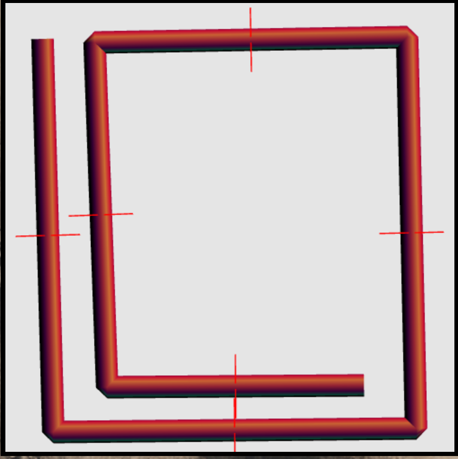

Name: Michael Ettinger
LoginID: mcetting
PA2
PA2
Program Description
This progams takes the last one and adds smooth shading and specular lighting.
Extra Stuff: added A/D rotation for debugging normals, added proper specular calculation with a rotation viewer position.
Screenshots
